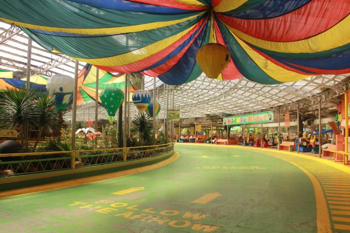
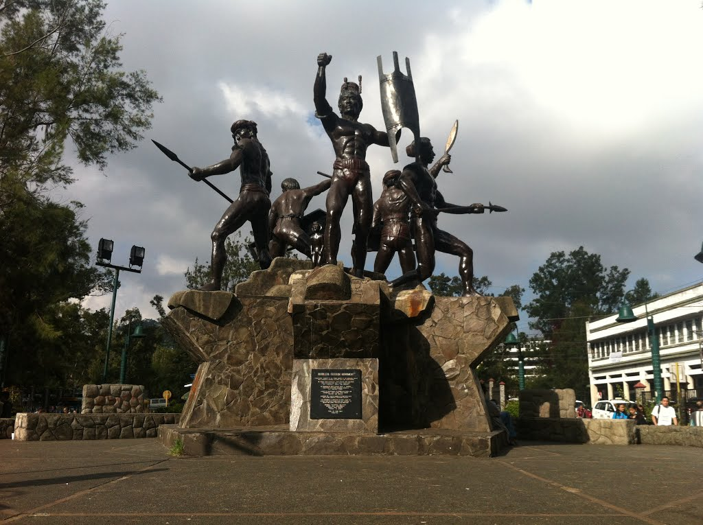
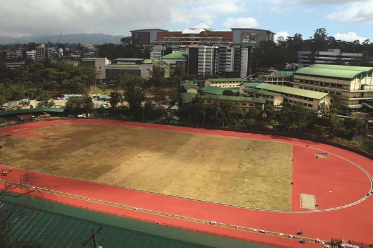
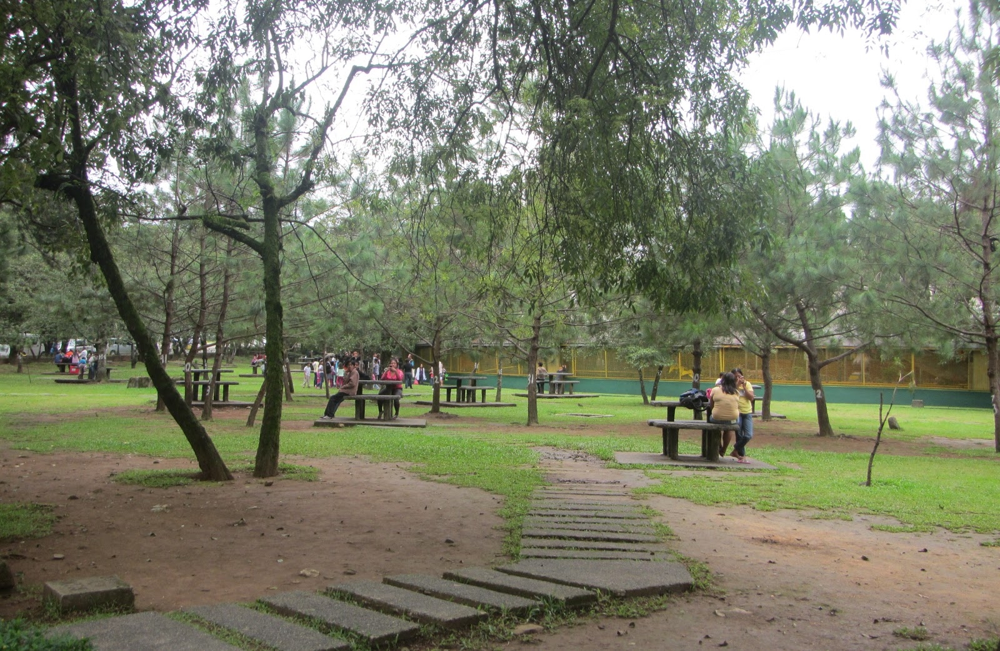
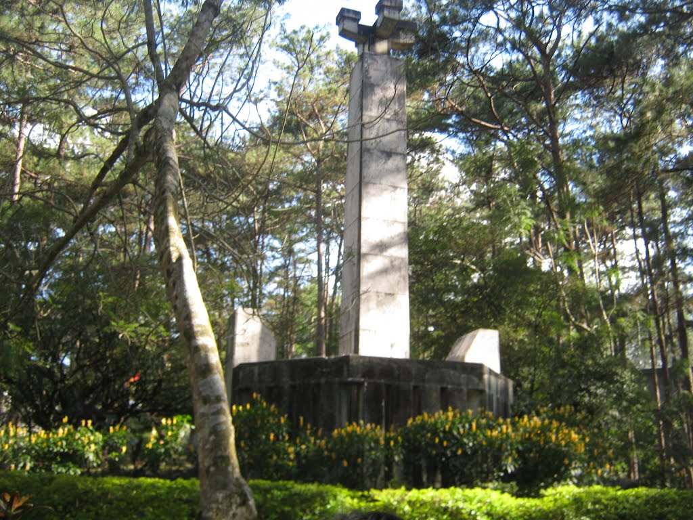
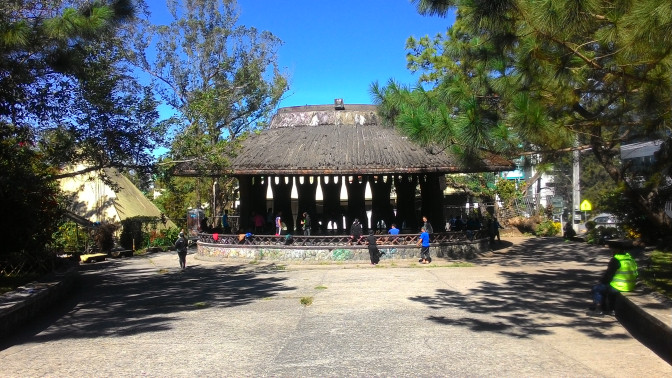
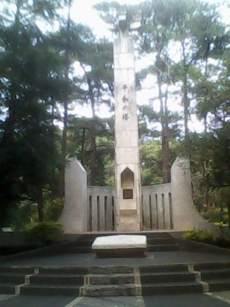

Clusters
__________________________________________________________________
"Maintaining ones culture, values and traditions is beyond price"
---- Getano Lui ----
image by: garyphotos & gaedigiarts

Melvin Jones Grandstand

Image Source: Panoramio.com
Melvin Jones Grandstand is a wide open field located at the east side of the park. Football games, concerts and other events are often held here.
Burnham Lake

Sometimes called City Pond is a man-made lake at the center of the park. A stroll by the the lake can be revitalizing or just enjoy the view with a loved one. Carp, koi and tilapia can be found swimming in the lake. The lake's water color varies with the season with the water being brown during summer. Tourists and residents can rent boats for a price range of 100 - 200 php..
Children’s Park

A park located in the west side of the park where children can play in swings, seesaws, slides and many more. Families can also have picnics and quiet walks in this area. The park was recently improved and restored by the Government of Baguio. Bikes are available for rental at 40 - 80 Php in this area.
Skating Rink
Image Source: wikimapia.com
A small dome located between the lake and athletic bowl. Tourists can rent roller skates here. A small amusement park can be found in the middle of the dome.
Rose Garden

Image Source: http://lexicalcrown.blogspot.com
A garden full of beatiful fauna located at the north side entrance of the park. The bust of the head architecture, Daniel Burnham is found here. The garden includes an amphithearter in the center, dancing fountains and the entrance gate of Burnham park.
Orchidarium

A garden where flowers are grown, displayed and sold. Orchids and other types of flowers can be found and purchased in this area. The Orchid House is located in the center.
Igorot Park
Image Source: Panoramio.com
A small park located beside Melvin Jones. A monument of the 5 main native tribes of CAR; The Ibalois, Kankanaeys, Ifugaos, Bontocs and Kalingas. Residents often play chess in this park.
Athletic Bowl
Image Source: http://www.sunstar.com.ph
A sporting field located south part of the park. The field are used for sporting like Track and Field. Facilities located here are the Tennis club, Archery range and a seedling nursery.
Picnic Grove
Image Source: http://lexicalcrown.blogspot.com
A picnic area located beside the Skating rink. This area is mainly used as a free picnic ground for tourists and residents. The area has picnic tables.
Pine Trees of the World
Image Source: Panoramio.com
A garden where different pine tree species from the world are planted. Unfortunately all of the foreign pine trees have died out.
Sunshine Park
Image Source: gabbygagno.wordpress.com
A small park located beside University of the Philippines. Cultural shows are often held here and the park contains some of the most fragrant and beautiful flowers.
Japanese Peace Tower
Image Source: Wikimapia.com
Is a small park located in the left side of Baguio City National Highschool is a small triangular park with a monument infront. This monument/tower symbolizes the friendship between the Philippines and Japan. The tower serves a symbol of remembrance to all the soldiers in World War 2.